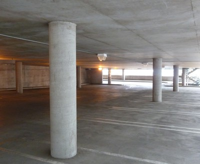

Techo de concreto reforzado colado in situ [RC1]
Losas de hormigón armado se apoyan en columnas o muros de carga. Losas planas que se apoyan en columnas con capiteles y / o paneles de caída, mientras que las placas planas se apoyan en columnas sin capitales. Este sistema de piso también incluye forjados reticulares sin vigas. Las losas o placas pueden ser postensado . A veces , se cubrirán con techos ligeros.

Reinforced concrete waffle slab, Canada (S. Brzev)

Placa plana de hormigón armado soportada por columnas, USA (S. Brzev)

Losa de techo de concreto con el apoyo de las paredes, Pakistán(J. Bothara)

Sistema e losa plana de hormigón armado con capitales, UK (S. Brzev)